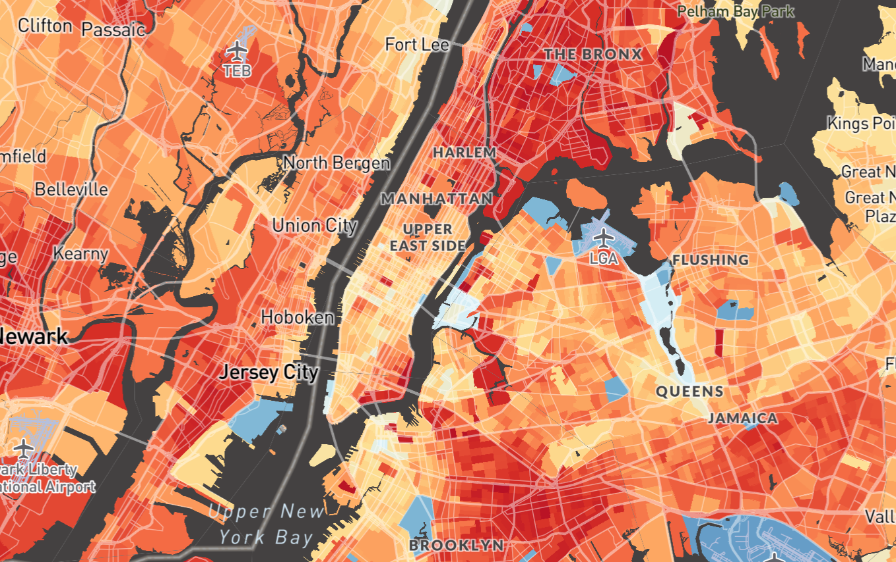

About
The most disadvantaged Americans often face the worst environmental conditions, substantially reducing both health and lifespan. The Environmental Equity Atlas is an environmental policy tool designed and developed by Ty Pham-Swann, a student at Brown University, to demonstrate environmental justice issues and public health disparities through an impartial presentation of neighborhood-level data.

The map allows users to explore environmental health and socioeconomic data in their neighborhood at the census tract and county level. Please direct any questions or inquiries to ty_pham-swann@brown.edu. This project would not have been possible without the data aggregation effort by the Biden administration in creation of the Climate and Economic Justice Screening Tool, research by Susanne Amelie Benz and Jennifer Anne Burney, data collection from numerous government agencies including the CDC, DOT, The U.S. Census, HUD, EPA, USACE, MLRC, CONUS, DOI, NLRC, HOLC, FEMA, DOE, work by The First Street Foundation, and work by Mapbox and OpenStreetMap. Template for this site from HTML5UP. The current version of this tool only contains data for states in the continental United States. Some states, counties, and census tracts will lack certain data layers. The views expressed in this policy tool are not reflective of The U.S. Census or any government agency whose data is presented.
The full repository for the web application is available at this repository; reach out individually for code used in data processing.
The full repository for the web application is available at this repository; reach out individually for code used in data processing.